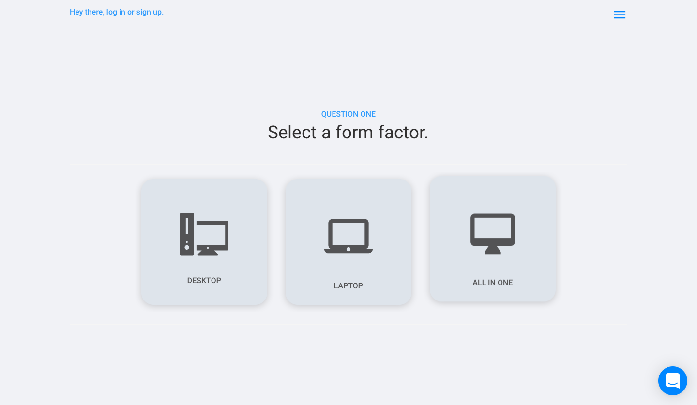
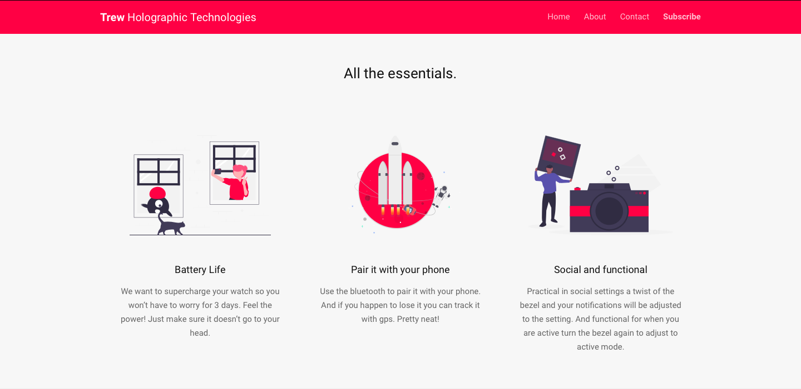
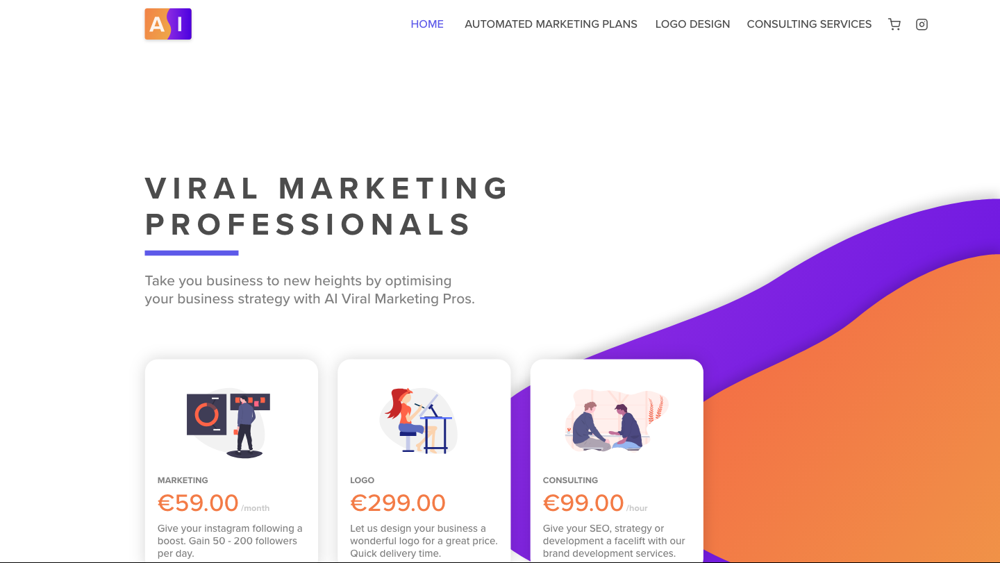
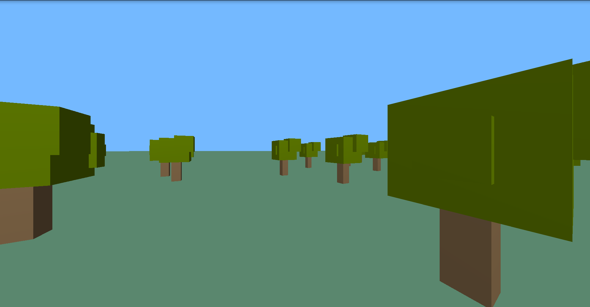

Introduction
Hey there, I'm Conor 🙂. Nice to meet you. I'm a programmer and graphic designer from Dublin, Ireland. I'm currently studying Electronic and Computer Engineering at DCU. I'm pretty busy at the moment, but I'm always open to hearing about new projects, so if you like what you ready here, give me a shout in the contact me section and I'll see what I can do. For now though, take a look below to see what I can do.
Disclaimer: This is not a corperate portfolio. Please see my LinkdIn for a professional overview of my work. Also, I should say, this portfolio was built in under 12 hours, so if you see something out of place, shoot me an email.
Langauges and Proficiencies
I have hands on experience with a lot of programming languages, but these are the ones I would be most comfortable working with right now:
Web Related Languages
- HTML
- CSS
- JavaScript
- Python (Django)
- PHP
Web Libraries
- Bulma
- Bootstrap
- ThreeJS
- ScrollMagic
- And More...
Project 01 - What Suits You?
Summary
I created "What Suits You?" over two years ago in order to help customers find the perfect product for them in collaboration with a colleague of mine at the time. We created a website that gathered the customer's preferences through a selection of questions and used a prebuilt database to select a product that suited them. In the computers section of the site, there was a total of 1,125 possible answer combinations, making it virtually impossible to get a selection wrong. In practice, the databasing and search algorithm I had designed were functional and efficient, but not scalable. The project was eventually scrapped due to the extensive marketing costs required to keep the service running.
Extended Description
The project made heavy use of Google's Firebase service. I used this service for storage, user authentication, and a planned messaging service on the unreleased mobile version of the service. This service was fast and efficient, but was more expensive than a regular SQL database. Looking back, the website could have easily been written much better in Django, using a different SQL service rather than firebase. The entire service would probably been functional on just an SQLlite database.
As for the interaction flow of the website, the user would enter the homepage and click the quizzes button, bringing them to the quizzes page. They would then answer a number of questions. After they finished, the would be given a suggestion that best suited them. Quiz genres of shoes and computers were released, with many more quizzes planned, including insurance, cars and mobile phones.
Although the website is no longer live, I'll attach images of the website below:
Fig 1.1: The landing Page of the website.
Fig 1.2: The first question of the computers quiz.
Although the project was a success, peaking at 7,500 users per month, it was eventually shut down due to financial restrictions. I do have plans to relaunch it in the future.
Awards Won
WSY won the innovation award at the regional finals of the Local Enterprise Office's 'Young Entrepreneur Of The Year Awards' in 2017. It then went on to win the regional, national, and European/International finals of the NFTE 'Young Entrepreneur Of The Year Awards' in 2018.
Project 02 - Project Flow
Online at mytrew.com.
Summary
Project Flow was a freelance project I completed in September, 2019. The initial job was for a sister website to a wearable device. After building the website, I was recommissioned to build a companion app for the wearable. Although, I can show images of the website, I cannot show or say more about the app due to legal reasons.
Extended Description
The project was initially only a landing page, but I was later commissioned to build a secure log in form and web service for the app. I also created a web-based admin dashboard that allowed the app's administrator to manage alerts and content in the app, as well as manage the users that had access to the app.
I have attached a screenshot of the landing page of the website below:
Fig 2.1: The landing Page of the website.
Fig 2.2: A part of the page showcasing the services advantages.
Project 03 - CanSat
More information available in this PDF.
Summary
CanSat was a monumentally large project that I participated in 2017 and 2018. I led a team of 5 people both times, coming runnerup in the regional finals in 2017 and runner up in the national finals in 2018. We were tasked with designing a satellite that would be dropped from a rocket a 500m to take measurements. I did many different things on this project, so I'll split each up into their own section. Due to the lenght of these parts, I will only make reference to the 2018 competition.
Programming
Being the sole programmer on the team, I programmed the arduino microcontroller to take measurments during flight. I also programmed the controller to communicate with a base computer on the ground. The satellite could record pressure, altitude, velocity, temperature, and could also take soil samples upon reaching the ground. It communicated with the base computer using a radio antenna. The satellite streamed its descent via a Raspberry Pi and camera to YouTube live. I configured all of the stream settings and the image processing to make this a success.
Web Development
I created a dashboard for live statistics from the satellite and also a page where people could watch the satellite's livestream.
Electrical Engineering and Communications
All of the components in the satellite were modularized in order to simplify the process of changing components if a failure occured. The system was also powered by two rechargable li-ion batteries nested in the satellites chassis. Capacitive interface buttons were also planned, but were never implemented due to resource limitations.
Physics
The satellite had to survive a massive drop from 500m in the sky. To achieve this, we designed a parachute and parachute release system for the can.
Unfortunately, there are no pictures for this project at this time.
Project 04 - AIViralPros
Good news! This website is still live to see here.
Summary
As another commercial project early in my web development career, this website is a basic eCommerce store designed by me and built with Wix. There really isn't much to say about this, it really just shows that I know eCommerce and stuff. It also comes up as the number one result on Google, so I'm pretty good at SEO too.
Fig 2.1: The landing Page of the website.
Project X - Personal Portfolio
You're looking at it.
Summary
Most people wouldn't include their own portfolio on their own portfolio, but I'm actually really proud of this. Here's a little story. Yesterday (while writing this it's the 11/12/19, but the date doesn't really matter), I saw a video of a YouTuber, using a library I'd wanted to learn for a really long time, so I took this as the oppertunity to learn it. In the past two days, I've spent close to 12 hours at my computer (probably more), on 600mg of caffine in total (through this really lovely drink called DART), learning THREE.js and ScrollMagic, with the former leading into the latter. For your enjoyment, I'm going to go through what I did to make this portfolio real.
Trees, trees, and more trees.
I started learning THREE.js by rendering a 3D forest. It's more complicated than it sounds. I first learned how to generate a 3D box geometry and gave it a colour mesh. Then I learned how to render it on the screen, and make it rotate and fly and whatnot. I then grouped it together with another few boxes and created a 2D ground plane to create a forest. I programmed the camera to have some basic movement controls with imput from the user. I also added some ambient and point lighting to brigten the place up. I felt like, and this is really hard for me to type, I had gone from "zero to hero". You'll never hear me say that phrase again. Below is the outcome:
Fig 2.1: A picture of a really nice forest.
We are all but orbiting you.
Trees weren't really doing it for me, so I decided to scale up a little bit and build the solar system. A bit of a jump right? Well, not the entire solar system, but the Earth and Mars. Hint: If you look (not so) closely at the top of the page, you'll see that both planets are actually the same model, but with different texture paints. Funny how being lazy works.
So to do this, I learned how to use a GLTF loader to load GLTF 3D model files. GLTF files are startlingly hard to come by, so I had to download blender to export as GLTF 2.0. There were also numerous settings I had to tweak to get it working properly with the textures. After getting everything loaded in, I used the same algoritm I used to generate a forest on sphere geometries to generate a star field. Finally, I used the font loader and text geometry functions to get the wireframed letters you can see above. This was obviously not intentional, but I prefer the way it turned out now as opposed to what it would have been with wireframes turned off.
Fig 2.1: A picture of a really nice world (or two).
A final dash of magic.
After finishing what I have above, I thought it might be cool to make a portfolio based on the work I'd done. I have attempted to make portfolios in the past, but it was always too boring. So, I figured, that if I was learning a library at the same time it might be easier. So just after tackling THREE.js head on, I decided to tackle ScrollMagic. I won't go too in depth, but see how the navigation bar and menu snap to the top when you scroll down, that's what ScrollMagic does, and it's really only scratching the surface. you can already see what it does, so I won't attach a picture.
Awards
None right now, but I think it's one of my best minimalist works to date. Most of my good stuff never sees the light of day, but I'm happy enough to let this out.
Direct Message
Like what you see? Send me a message to tell me what you think! Or, you know, pay me to build you a website.
Other contact routes.
If you don't do the whole form thing then you can catch me at my email: conormcurley@gmail.com.